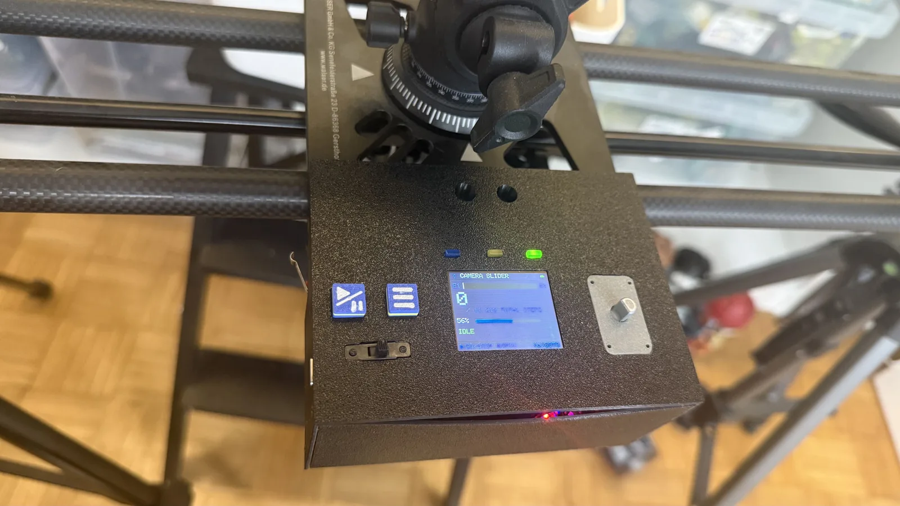
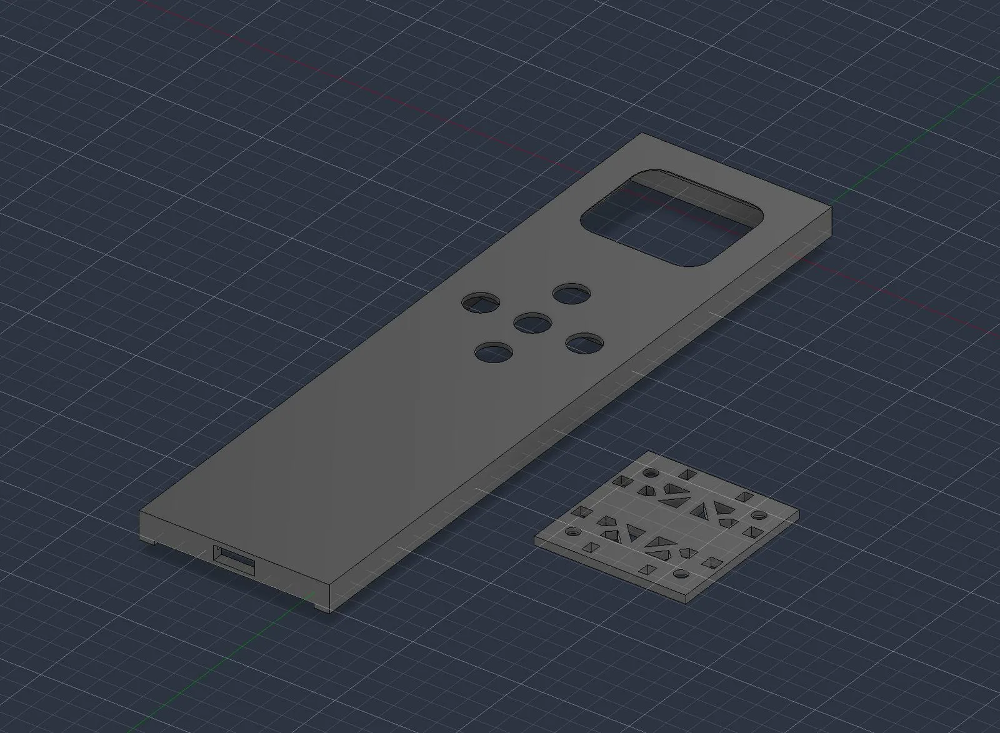

← all notes
22.08.2026#slider #electronics
Assembled, it works, but there's a catch :)
The lid isn't stiff enough and flexes noticeably, which lets you glimpse the indicator lights inside. And there's no room left inside the case to thicken it. So I'll end up making the lid thicker on the outside instead. Not very pretty, but simple.
Also still working on the remote, here's where it's at.
I'd really like to fit a bigger battery in there, but I'm limited by the power of the built-in charger. And I don't really want to cram in another board. So it looks like for all my ideas I'll have to add a GPIO expander…
The lid isn't stiff enough and flexes noticeably, which lets you glimpse the indicator lights inside. And there's no room left inside the case to thicken it. So I'll end up making the lid thicker on the outside instead. Not very pretty, but simple.

Also still working on the remote, here's where it's at.

I'd really like to fit a bigger battery in there, but I'm limited by the power of the built-in charger. And I don't really want to cram in another board. So it looks like for all my ideas I'll have to add a GPIO expander…
Comments